In this section we consider the method to solve
BMI problems by using QE [2].
This method is applicable to not only BMI but also
general matrix inequality (Polynomial Matrix Inequality; PMI).
Here we denote a polynomial matrix inequality by
 ,
where
,
where
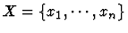
and we use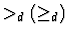
_d (\geq_d)$"> for definiteness of matrices in order to distinguish ordinary inequality sign.Determining (semi)definiteness for a real symmetric matrix is achieved without computing eigenvalues by using the following well-known as Sylvester's theorem; For a matrix
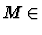
R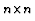
, we denote by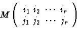
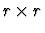
submatrix of M which consists of (ik,jl)-entries of M, where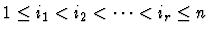
and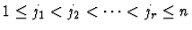
.
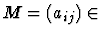
C be a Hermitian matrix. Then
(i)
M is positive semi-definite if and only if
all principal minors of M are non negative i.e.
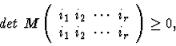 |
(6) |
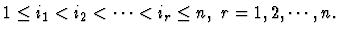
(ii)
M is positive definite if and only if
all leading principal minors of M are positive i.e.
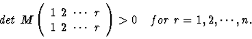 0 \ \ \ for \ r=1,2,\cdots,n. \end{displaymath}"> |
(7) |
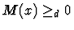
can be reduced to the formula which is the conjunction of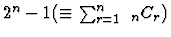
inequalities.